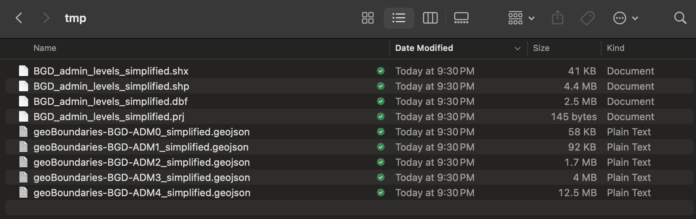

Getting administrative units of sampling sites
get_admin_data.RmdEnvironmental Sampling (ES) studies are conducted in a variety of settings, ranging from densely urban to suburban and rural areas. One aspect of collating a thorough set of metadata for ES observations includes reverse geocoding, which converts the latitude and longitude of sampling sites into place names. This process facilitates the grouping of sites, weighting of observations, and relating collected samples to the local population. To support this, we have implemented a set of functions that identify ISO3 codes, download administrative boundaries via the geoBoundaries API, and retrieve all administrative levels related to each set of coordinates in an ES dataset.
See below for an example of how to use the es package to
download geographic boundaries and identify the administrative units for
a set of sampling sites.
# Create an output directory
path <- file.path(getwd(), 'tmp')
dir.create(path)
# Get ISO3 code for sample data
template_iso <- coords_to_iso3(lon=template_es_data$lon,
lat=template_es_data$lat)
# Download administrative unit data from geoBoundaries
download_admin_data(iso3 = template_iso$admin_0_iso[1],
release='gbOpen',
path_output = path,
keep_geojson = TRUE,
simplified = TRUE)
trying URL 'https://github.com/wmgeolab/geoBoundaries/raw/9469f09/releaseData/gbOpen/BGD/ADM4/geoBoundaries-BGD-ADM4_simplified.geojson'
Content type 'application/octet-stream' length 12493127 bytes (11.9 MB)
==================================================
downloaded 11.9 MB
trying URL 'https://github.com/wmgeolab/geoBoundaries/raw/9469f09/releaseData/gbOpen/BGD/ADM3/geoBoundaries-BGD-ADM3_simplified.geojson'
Content type 'application/octet-stream' length 3986002 bytes (3.8 MB)
==================================================
downloaded 3.8 MB
trying URL 'https://github.com/wmgeolab/geoBoundaries/raw/9469f09/releaseData/gbOpen/BGD/ADM2/geoBoundaries-BGD-ADM2_simplified.geojson'
Content type 'application/octet-stream' length 1686112 bytes (1.6 MB)
==================================================
downloaded 1.6 MB
trying URL 'https://github.com/wmgeolab/geoBoundaries/raw/9469f09/releaseData/gbOpen/BGD/ADM1/geoBoundaries-BGD-ADM1_simplified.geojson'
Content type 'application/octet-stream' length 92247 bytes (90 KB)
==================================================
downloaded 90 KB
trying URL 'https://github.com/wmgeolab/geoBoundaries/raw/9469f09/releaseData/gbOpen/BGD/ADM0/geoBoundaries-BGD-ADM0_simplified.geojson'
Content type 'application/octet-stream' length 57643 bytes (56 KB)
==================================================
downloaded 56 KB
Done.
Data saved here: <working directory>/tmp/BGD_admin_levels_simplified.shpAdministrative units from geoBoundaries are downloaded to the ‘tmp’ directory. Individual GeoJSON files for each administrative level are downloaded first, and then a composite ESRI Shapefile is saved to the output directory.

# Relate downloaded administrative data to sampling sites
get_admin_data(lon = template_es_data$lon,
lat = template_es_data$lat,
path_admin_data = file.path(path, 'BGD_admin_levels_simplified.shp'))
Loading admin data...
Extracting admin info at point locations...
Done.
id lon lat admin_0 admin_1 admin_2 admin_3 admin_4 iso3
1 1 90.37 23.80 Bangledesh Dhaka Dhaka Pallabi Ward No-14 (part) BGD
2 2 90.38 23.80 Bangledesh Dhaka Dhaka Kafrul Ward No-16 BGD
3 3 90.37 23.81 Bangledesh Dhaka Dhaka Pallabi Ward No-03 BGD
geometry
1 POINT (90.37 23.8)
2 POINT (90.38 23.8)
3 POINT (90.37 23.81)And the following plotting code will visualize the sampling sites and associated administrative units.
library(sf)
library(dplyr)
library(ggplot2)
library(cowplot)
shapefile_path <- "<working directory>/tmp/BGD_admin_levels_simplified.shp"
shapefile <- st_read(shapefile_path)
coordinates <- data.frame(x = template_es_data$lon, y = template_es_data$lat)
coordinates <- distinct(coordinates)
points_sf <- st_as_sf(coordinates, coords = c("x", "y"), crs = st_crs(shapefile))
shapefile2 <- st_join(shapefile, points_sf, join = st_contains, left=F)
points_sf <- st_join(points_sf, shapefile, join = st_within)
bbox <- st_bbox(st_buffer(points_sf, dist = 5000))
p1 <- ggplot() +
geom_sf(data = shapefile, fill = "white", color = "black") +
geom_sf(data = points_sf, aes(color = admin_4), size = 3) +
scale_color_brewer(palette = "Set1") +
theme_minimal() +
theme(legend.position = 'none') +
labs(title = "Shapefile with administrative level 4",
x = "Longitude",
y = "Latitude")
p2 <- ggplot() +
geom_sf(data = shapefile, fill = "white", color = "grey") +
geom_sf(data = shapefile2, aes(fill = admin_4), color = "black", alpha=0.3) +
geom_sf(data = points_sf, aes(color = admin_4), size = 3) +
coord_sf(xlim = c(bbox["xmin"], bbox["xmax"]), ylim = c(bbox["ymin"], bbox["ymax"])) +
scale_fill_brewer(palette = "Set1") +
scale_color_brewer(palette = "Set1") +
guides(fill = guide_legend(title = "Administrative Unit"),
color = guide_legend(title = "Administrative Unit")) +
theme_minimal() +
labs(title = "Administrative place name of each site",
x = "Longitude",
y = "Latitude",
color = "Polygon")
leg <- get_legend(p2)
p2 <- p2 + theme(legend.position = 'none')
plot_grid(
plot_grid(p1, p2, ncol=2, align = 'vh'),
leg,
rel_widths = c(1,0.2)
)